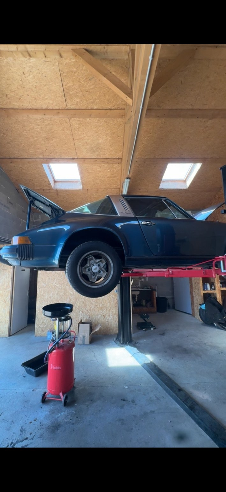
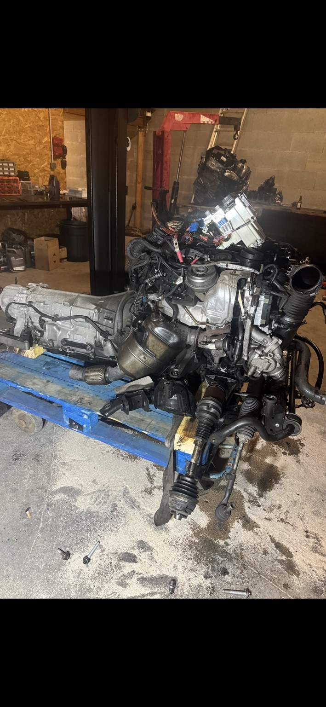
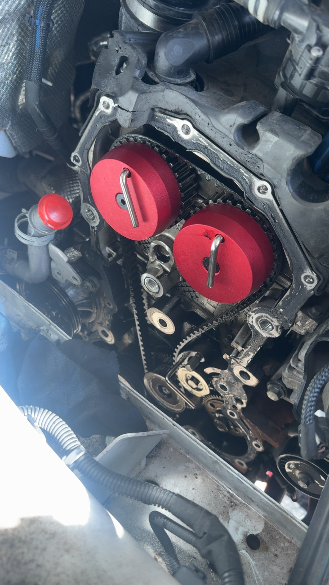

01 / DIAGNOSTIC
Diagnostic électronique
Lecture des défauts, contrôle des paramètres et aide à l’identification des causes possibles d’une panne.
L’Atelier Guiotto vous accompagne pour l’entretien, le diagnostic et les interventions mécaniques sur votre véhicule, avec une approche soignée et un souci du travail bien fait.
Chaque intervention commence par l’identification du besoin et un échange sur les symptômes constatés. Contactez l’atelier pour vérifier la faisabilité de votre demande.
Lecture des défauts, contrôle des paramètres et aide à l’identification des causes possibles d’une panne.
Interventions mécaniques et remplacement de composants selon le véhicule, le diagnostic et les pièces nécessaires.
Travaux sur organes moteur et périphériques, avec contrôle des éléments concernés avant remontage.
Entretien courant et contrôles à définir selon l’âge, le kilométrage et les préconisations du constructeur.
Analyse des symptômes et contrôles ciblés pour orienter la réparation plutôt que remplacer des pièces au hasard.
Échange autour des travaux à prévoir, des priorités et des solutions adaptées à votre situation.
L’Atelier Guiotto met en avant le savoir-faire mécanique, la méthode et la passion de l’automobile. Les photos ci-dessous montrent des exemples de travaux réellement réalisés à l’atelier.

Quelques images de véhicules et d’interventions mécaniques partagées par L’Atelier Guiotto.


Les avis authentiques aident les automobilistes à se faire une idée de l’expérience proposée par l’atelier.
Consultez les avis disponibles sur Google ou partagez votre expérience si vous avez déjà confié votre véhicule à L’Atelier Guiotto.
Rechercher L’Atelier Guiotto sur Google ↗Aucun avis ni note n’est inventé sur ce site. Remplacez ce lien par l’URL directe de votre fiche Google lorsque vous l’avez sous la main.
Présentez les symptômes et les informations de votre véhicule par e-mail.
Pour une demande de renseignement ou de devis, indiquez si possible la marque, le modèle, l’année, la motorisation et les symptômes observés.
Dans votre message, précisez :
Les horaires, le téléphone et les modalités de prise de rendez-vous pourront être ajoutés dès qu’ils seront confirmés.